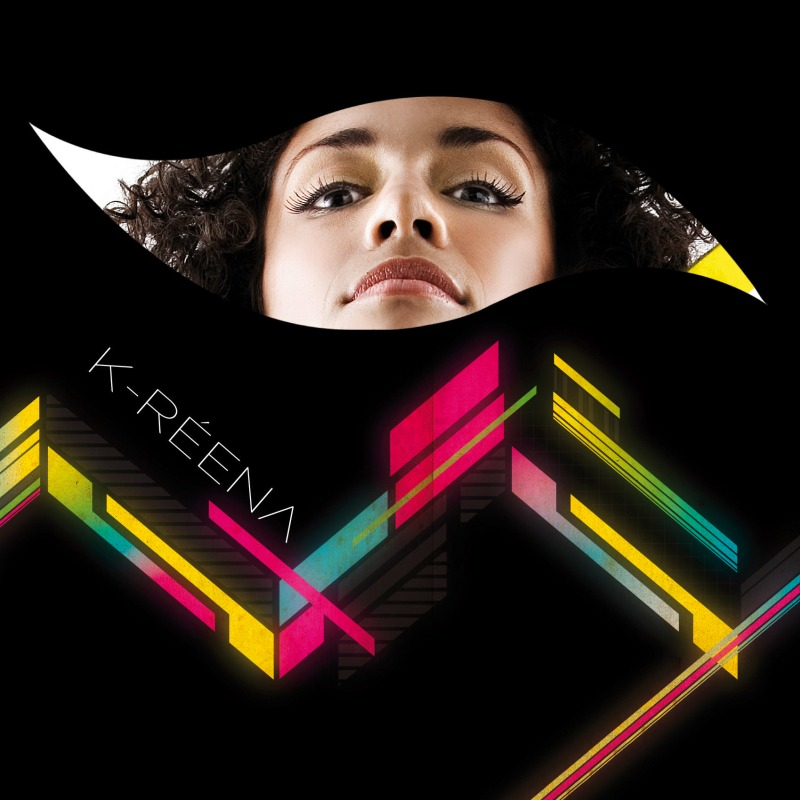

01 / 04
K-RÉENA
Una voz con
identidad.
Pop, soul y R&B desde Chile. Una propuesta escénica marcada por la música negra, el groove y una voz que combina fuerza y sensibilidad.
02 / 04
ESCUCHAR
Música

2009
ÁLBUM DE ESTUDIO
K-RÉENA
El álbum debut que consolidó su identidad dentro del pop, soul y R&B chileno.
01Siento tanto amor2009
02No quiero ser2009
03Cuestión de piel2009
04Toda mi verdad2009
05Rating2010
06Aún estás2025
03 / 04
MIRAR
Videos

K-RÉENA
04 / K-RÉENA
Black music.
Chilean soul.
K-Réena es el nombre artístico de Katherine Macarena Contreras, cantante chilena vinculada al pop, soul, funk y R&B. Su trayectoria comenzó en la escena musical a fines de los 2000 y tomó forma como solista con su álbum homónimo de 2009.
Su propuesta combina voz, groove, street dance y una fuerte identidad escénica. En 2010 participó en el Festival de Viña del Mar interpretando su versión de “Los Momentos”.
Más sobre K-Réena ↗BOOKING / CONTACTO
Chile · Worldwide